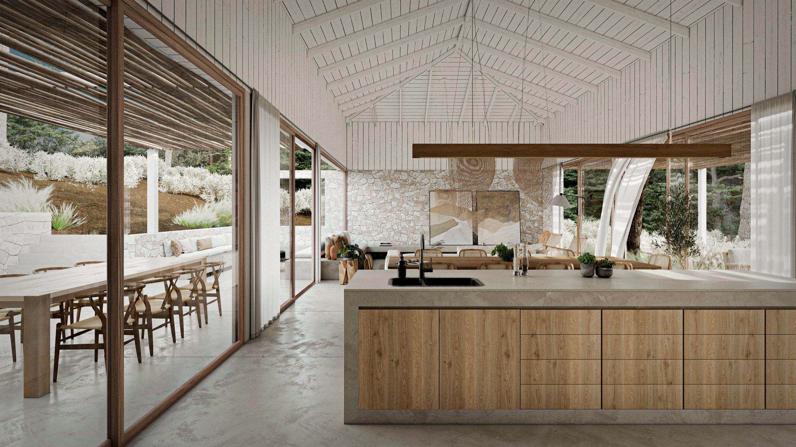
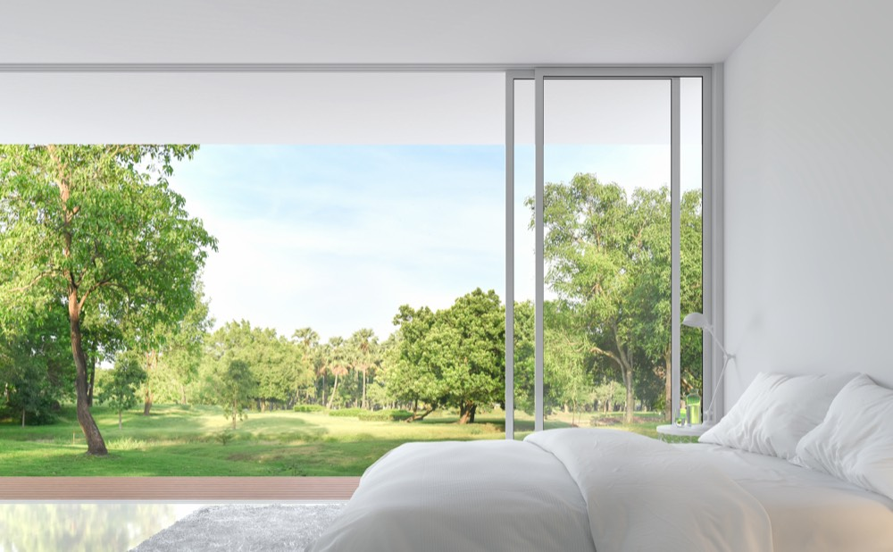
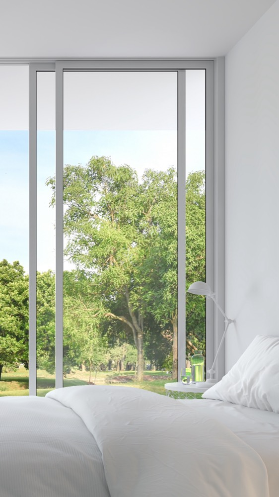
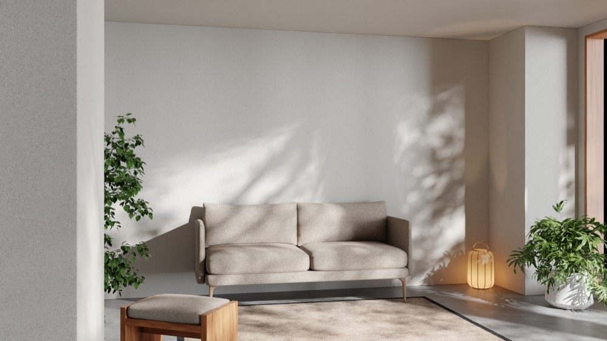

Splash Labs
Propuesta de contenido — KUNÁ
Preparado para IIM Promotora Inmobiliaria por Splash Labs
Fondo: trabajo previo de Splash Labs para otro proyecto. No corresponde a KUNÁ.
Alcance
Producción de contenido fotográfico y audiovisual con inteligencia artificial para la Tipología 1 de KUNÁ, a partir de los renders del proyecto.
La propuesta se concentra en Tipología 1 porque es la que permanece en venta. Si más adelante se requiere material para Tipología 2 o para otro proyecto, aplica la misma estructura.
El entregable final son 24 imágenes y un video de 45 segundos, listos para portales inmobiliarios, brochure, web y redes sociales.

Set fotográfico — Tipología 1
24 imágenes finales: 18 en formato horizontal y 6 en formato vertical.
Las horizontales son para portales inmobiliarios, brochure, presentaciones y web. Las verticales son para historias, publicaciones de Instagram y Facebook, y pauta en redes, donde el formato horizontal se recorta y pierde composición.


Imagen referencial de stock. No corresponde a KUNÁ.
El desglose cubre los espacios de venta de la casa según los planos arquitectónicos:
| Espacio | Imágenes |
|---|---|
| Exteriores (fachada, acceso, conjunto) | 3 |
| Jardín principal y deck social | 2 |
| Sala | 2 |
| Comedor | 1 |
| Cocina | 2 |
| Dormitorio máster | 2 |
| Walk-in closet y baño máster | 2 |
| Dormitorios 1 y 2 | 2 |
| Baño secundario | 1 |
| Sala TV / open office | 1 |
| Total horizontales | 18 |
| Selección en formato vertical | 6 |
Máximo dos ángulos por espacio. No se incluyen áreas de servicio (cuarto de máquinas, bodega, cuarto de bombas, baño de servicio).
Una propuesta a la medida. Las 18 imágenes horizontales son la selección que planteamos como objetivo para Tipología 1. Si necesitan más o menos, ajustamos la propuesta: nuestros servicios se personalizan por completo según cada cliente.
Por qué 6 verticales
Las 6 imágenes verticales son la base del video con IA. Partir de imágenes fieles al proyecto, compuestas desde el inicio para ese formato, es lo que mantiene el video fiel a la casa.
- ¿Por qué no hacer un video tradicional completo?
- Con IA podemos generar ángulos que no son posibles de conseguir con una cámara, como recorridos continuos entre espacios o movimientos que atraviesan ventanales. Además, los tiempos de entrega son menores.
- ¿Por qué no reencuadrar las horizontales con IA?
- Al pasar una imagen horizontal a vertical, la IA tiene que completar lo que no estaba en el encuadre original, y ahí aparecen modificaciones: luces donde no hay luminarias, paredes que no están donde deberían, proporciones que cambian. Por eso lo mejor es mezclar la base fiel al proyecto con la IA: así se obtienen los mejores resultados.
- ¿Solo sirven para el video?
- No. Las 6 verticales también se usan por sí solas para pautar, publicar anuncios en historias y contenido en redes.
Video promocional
Un video de hasta 45 segundos en formato vertical, producido con inteligencia artificial a partir del material fotográfico del proyecto.
Incluye musicalización, textos en pantalla y cierre con marca. Se entrega en un formato, optimizado para el canal donde va a publicarse.
- Dos versiones sin costo adicional El video se entrega en dos renders: uno con textos en pantalla y otro sin textos. La pauta funciona mejor sin tanto texto, solo con lo importante.
- Edición por bloques Editamos el video de forma que internamente se puede ajustar a su gusto: publicar algunas partes por separado y dejar otras fuera.

Una ronda de revisión
Cubre
- Textos en pantalla
- Música
- Orden y duración de los planos
- Corrección de color
No cubre
No cubre regenerar tomas, cambiar el concepto ni modificar el guion. Esos cambios se cotizan como ronda adicional.
Trabajo previo · No corresponde a KUNÁ
Trabajo previo de Splash Labs
Piezas producidas para otros proyectos. No corresponden a KUNÁ.
-
San Patricio · Skypark Video con IA a partir de renders
-
San Patricio · Skypark Fotograma de video con IA
-
San Patricio · Oficinas Video con IA a partir de renders
-
San Patricio · Skypark Fotograma de video con IA
-
San Patricio · Avance del proyecto Video con IA
-
San Patricio · Skypark Fotograma de video con IA
-
San Patricio Presentadora frente a cámara y material de apoyo
-
San Patricio · Skypark Fotograma de video con IA
Inversión
| Concepto | Valor |
|---|---|
| Set fotográfico Tipología 1 18 horizontales + 6 verticales | $550 |
| Video promocional 45 segundos | $360 |
| Total | $910 |
Valores en dólares estadounidenses. Los precios no incluyen IVA.
Beneficio por volumen. Este valor corresponde a una tipología. A partir del tercer proyecto o tipología, aplican descuentos preferenciales.
Servicios adicionales
Disponibles sobre el alcance contratado, a solicitud.
| Servicio | Valor |
|---|---|
| Corte vertical de 15 segundos, derivado del video de 45s | $55 c/u |
| Imagen adicional o variación de paleta y mobiliario | $35 c/u |
| Versión del video en formato adicional (horizontal para web o YouTube) | $120 |
| Ronda de revisión adicional | $50 |
Valores en dólares estadounidenses. Los precios no incluyen IVA.
Los cortes de 15 segundos se obtienen del video ya producido y permiten cubrir varias semanas de publicaciones con una sola producción. De un video de 45 segundos se derivan hasta cuatro cortes distintos.
Plazos y proceso
El set fotográfico se produce primero y el video se construye sobre ese material. Esa secuencia mejora el resultado del video y mantiene coherencia visual entre todas las piezas.
Entrega de insumos por parte de IIM Renders del proyecto en calidad original
Set fotográfico 1 semana desde la recepción de insumos
Revisión y aprobación del set 2 días hábiles
Video promocional 1 semana y media desde la aprobación del set
Ronda de revisión del video 2 días hábiles
Tiempo total estimado: 3 semanas.
Para material atado a una fecha de lanzamiento, solicitamos confirmación con tres semanas de anticipación.
Condiciones
- Forma de pago.
- 50% de anticipo para iniciar producción, 50% contra entrega final.
- Insumos.
- IIM entrega los renders del proyecto en resolución y formato original. Los plazos corren desde la recepción de ese material. Material comprimido o de baja resolución limita la calidad del resultado y puede requerir ajuste de alcance.
- Derechos sobre el material base.
- IIM confirma contar con la autorización correspondiente para ceder los renders del proyecto con fines de modificación y producción de material promocional.
- Imagen referencial.
- Todas las piezas se entregan identificadas como imagen referencial. La aprobación final del contenido y la correspondencia entre lo mostrado y el producto entregado son responsabilidad de IIM.
- Entregables.
- Archivos finales en alta resolución, listos para publicación. No se entregan archivos editables ni material de proceso.
- Validez de la propuesta.
- 15 días calendario.